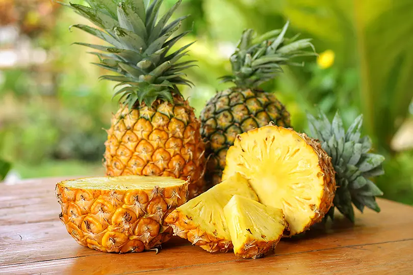
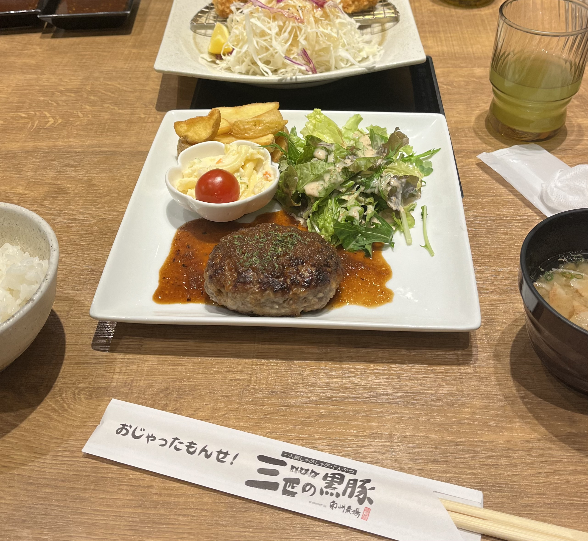

好きな食べ物

パイナップル
パイナップルは、甘酸っぱくてビタミンC、ビタミンB1、マンガン、銅、食物繊維などの栄養素が豊富です。
それに加えこれらの栄養素には、抗酸化作用、疲労回復、消化促進、などなど健康もよくとてもおいしい果物です。
出典：オリーブノート

ハンバーグ
このハンバーグは、たまたま行ってみたときのハンバーグの写真です。
ハンバーグの一番好きなとこのはやっぱり切ってみると肉汁が出てくるところです。